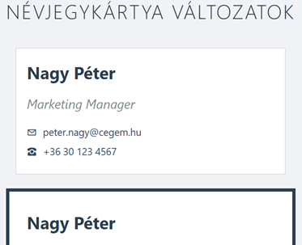

Névjegykártya készítése - Dobozmodell gyakorlat
Célkitűzés
Digitális névjegykártyák létrehozása (nevjegykartya.html), amelyek bemutatják a CSS dobozmodell működését különböző padding, margin és border beállításokkal.

CSS fájl beillesztése
Töltsd le a doboz_alap.css fájlt a Moodle-ről ugyanabba a mappába, ahol a HTML fájlod lesz! Ez tartalmazza az oldal alapformázását. Kapcsold be a HTML fájlodba a megfelelő módon a <head> részben.
1. HTML alapstruktúra
Készítsd el a nevjegykartya.html fájlt a szokásos HTML5 struktúrával. Az oldalnak legyen egy főcíme, valamint három div elem, amelyek a névjegykártya változatokat fogják tartalmazni. Mindegyik div kapjon egy egyedi osztályt: kartya-1, kartya-2, és kartya-3.
2. Kártyák tartalma
Mindhárom kártyába helyezz el:
- Egy második szintű címsort a névvel (pl. "Nagy Péter")
- Egy bekezdést a beosztással, amely kapjon egy "beosztas" osztályt
- Egy bekezdést az email címmel, "email" osztállyal
- Egy bekezdést a telefonszámmal, "telefon" osztállyal
Használj saját adatokat vagy kitalált információkat.
3. CSS stílusok hozzáadása
A HTML fájlban hozz létre egy <style> elemet a <head> részben, a külső CSS link után. Itt fogod megírni a dobozmodell gyakorló stílusokat.
Alapbeállítások
Először állítsd be, hogy mindhárom kártya 350 pixel széles legyen, fehér háttérszínű, és vízszintesen középre igazított az oldalon.
Tipp:
- Több osztályt vesszővel elválasztva lehet egyszerre kiválasztani
- A
margin: 20px auto;középre igazít egy fix szélességű elemet
4. Egyedi kártya stílusok
Első kártya - Egyszerű változat
Adj hozzá egy vékony, világosszürke keretet és kisebb belső térközt (padding). Használj 1 pixel vastag, #cccccc színű szegélyt.
Második kártya - Vastag keret
Készíts egy feltűnőbb változatot vastagabb, sötétebb kerettel (5 pixel, #2c3e50 szín) és nagyobb belső térközzel (25 pixel minden oldalon).
Harmadik kártya - Modern változat
Alkalmazz:
- 2 pixel vastag kék keretet (
#3498db) - Aszimmetrikus paddinget (függőlegesen 30px, vízszintesen 20px)
- Kerekített sarkokat 10 pixel sugarú ívvel
- Enyhe árnyékot a doboz alatt
Tipp: Az árnyékhoz használd: box-shadow: 0 2px 5px rgba(0,0,0,0.1);
5. Szövegelemek formázása
Formázd meg a kártyákon belüli szövegeket:
- A nevek legyenek sötét színűek, és ne legyen felső margójuk
- A beosztás legyen szürkés és dőlt betűs
- Az email és telefon elemek kapjanak kis függőleges margót (5px)
6. Kísérletezz és figyeld meg!
Teljes szélesség számítása
Számold ki mindhárom kártya valódi szélességét! Ne felejtsd el hozzáadni:
- Az alapszélességet (width)
- A bal és jobb paddinget
- A bal és jobb border vastagságát
Írd le HTML kommentben a számításaidat!
Margó összeomlás tesztelése
Adj alsó margót a kártyáknak és figyeld meg, hogyan viselkednek egymás alatt! Miért nem adódnak össze a margók?
Extra kihívás: Border-box kísérlet
Készíts egy negyedik kártyát, amelynél alkalmazod a box-sizing: border-box tulajdonságot. Használd ugyanazokat a méreteket, mint a második kártyánál. Mi a különbség?
Ellenőrzési lista
- [ ] Van DOCTYPE és megfelelő HTML struktúra?
- [ ] A külső CSS fájl be van linkelve?
- [ ] Mindhárom kártya elkészült a saját osztályával?
- [ ] A kártyák tartalma teljes (név, beosztás, email, telefon)?
- [ ] A kártyák középre vannak igazítva?
- [ ] Különböző padding és border beállítások alkalmazva?
- [ ] A harmadik kártya kerekített és árnyékolt?
- [ ] A teljes szélesség számítások dokumentálva vannak?
Megoldás feltöltése
Töltsd fel a kész nevjegykartya.html fájlt a Moodle-re.
Hasznos eszköz: A böngésző Fejlesztői eszközeiben (F12) a "Computed" fülön vizuálisan láthatod a dobozmodell minden értékét!